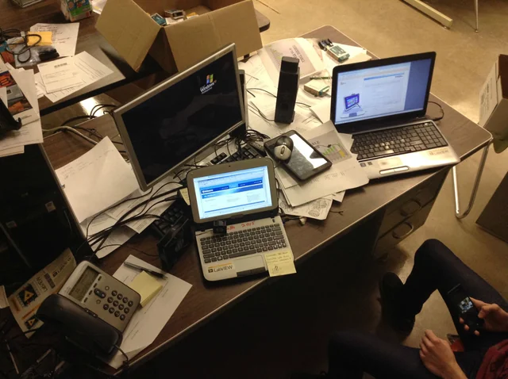
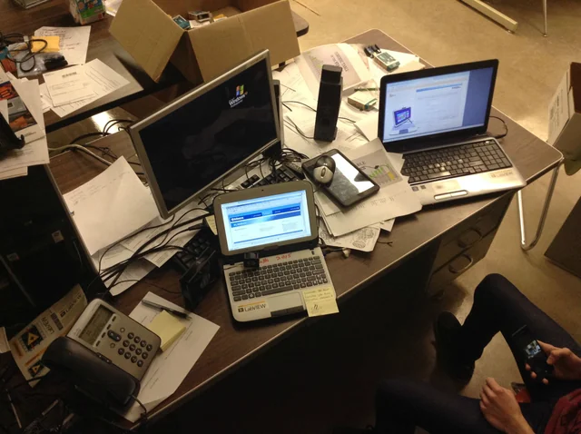
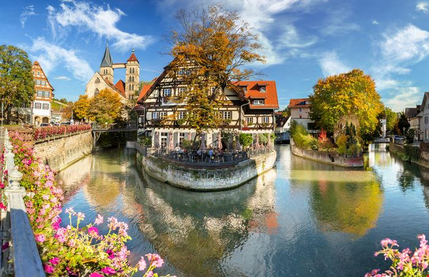

Escolha de Carreira
Quero ser programador, ainda não decidi se quero ser de Back-End, Front-End ou Mobile.

Qualidades e Defeitos
Sou bom em Inglês, nível avançado; promissor em computadores e tecnologia em geral e entusiasta de programação.
Eu devo melhorar minha comunicação com as pessoas, sou um pouco tímido mas somente com quem não conheço; sou indeciso e, às vezes, inseguro; tenho que
melhorar minha tomada de iniciativa.
 

Aspirações
No futuro, quero ser programador morando e trabalhando na Europa, especificamente na Alemanha ou França, e me casar com uma mulher de lá.
